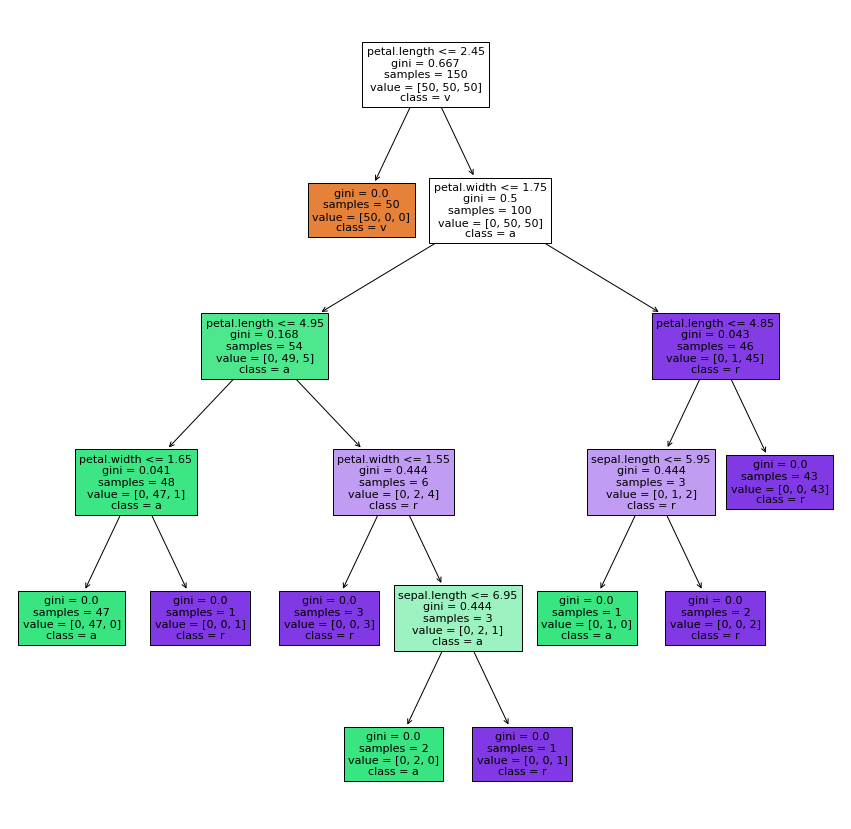

Decision Tree (Tugas 6)
Contents
Decision Tree (Tugas 6)#
- Apa itu Decision Tree?#
Jelaskan apa yang dimaksud dengan decision tree? Decision tree merupakan suatu struktur yang digunakan untuk membantu proses pengambilan keputusan. Disebut sebagai “tree” karena struktur ini menyerupai sebuah pohon lengkap dengan akar, batang, dan percabangannya.
- Kelebihan ?#
mudah dimengerti dan dianalisis
bisa dibuat secara numerik atau kategorik
hanya memerlukan sedikit pemrosesan data di awal pembuatan
mudah untuk dibuat kesimpulan
- Kekurangan ?#
overfitting
rentan terhadap kesalahan dalam masalah klasifikasi karena ada banyak pilihan
penghitungan bisa menjadi sangat kompleks, terutama jika banyak nilai tidak pasti
Menyiapkan library#
import pandas as pd
import numpy as np
from sklearn.metrics import accuracy_score
from sklearn import tree
from matplotlib import pyplot as plt
Mengambil dataset#
dt_iris = pd.read_csv("https://gist.githubusercontent.com/netj/8836201/raw/6f9306ad21398ea43cba4f7d537619d0e07d5ae3/iris.csv")
dt_iris.head()
| sepal.length | sepal.width | petal.length | petal.width | variety | |
|---|---|---|---|---|---|
| 0 | 5.1 | 3.5 | 1.4 | 0.2 | Setosa |
| 1 | 4.9 | 3.0 | 1.4 | 0.2 | Setosa |
| 2 | 4.7 | 3.2 | 1.3 | 0.2 | Setosa |
| 3 | 4.6 | 3.1 | 1.5 | 0.2 | Setosa |
| 4 | 5.0 | 3.6 | 1.4 | 0.2 | Setosa |
clf.predict([[2., 2.]])
NameErrorTraceback (most recent call last)
<ipython-input-3-406042bd612b> in <module>
----> 1 clf.predict([[2., 2.]])
NameError: name 'clf' is not defined
clf.predict_proba([[2., 2.]])
array([[0., 1.]])
y = dt_iris["variety"]
X = dt_iris.drop(columns=["variety"])
clf = tree.DecisionTreeClassifier(criterion="gini")
clf = clf.fit(X, y)
tree.plot_tree(clf)
[Text(0.5, 0.9166666666666666, 'X[2] <= 2.45\ngini = 0.667\nsamples = 150\nvalue = [50, 50, 50]'),
Text(0.4230769230769231, 0.75, 'gini = 0.0\nsamples = 50\nvalue = [50, 0, 0]'),
Text(0.5769230769230769, 0.75, 'X[3] <= 1.75\ngini = 0.5\nsamples = 100\nvalue = [0, 50, 50]'),
Text(0.3076923076923077, 0.5833333333333334, 'X[2] <= 4.95\ngini = 0.168\nsamples = 54\nvalue = [0, 49, 5]'),
Text(0.15384615384615385, 0.4166666666666667, 'X[3] <= 1.65\ngini = 0.041\nsamples = 48\nvalue = [0, 47, 1]'),
Text(0.07692307692307693, 0.25, 'gini = 0.0\nsamples = 47\nvalue = [0, 47, 0]'),
Text(0.23076923076923078, 0.25, 'gini = 0.0\nsamples = 1\nvalue = [0, 0, 1]'),
Text(0.46153846153846156, 0.4166666666666667, 'X[3] <= 1.55\ngini = 0.444\nsamples = 6\nvalue = [0, 2, 4]'),
Text(0.38461538461538464, 0.25, 'gini = 0.0\nsamples = 3\nvalue = [0, 0, 3]'),
Text(0.5384615384615384, 0.25, 'X[0] <= 6.95\ngini = 0.444\nsamples = 3\nvalue = [0, 2, 1]'),
Text(0.46153846153846156, 0.08333333333333333, 'gini = 0.0\nsamples = 2\nvalue = [0, 2, 0]'),
Text(0.6153846153846154, 0.08333333333333333, 'gini = 0.0\nsamples = 1\nvalue = [0, 0, 1]'),
Text(0.8461538461538461, 0.5833333333333334, 'X[2] <= 4.85\ngini = 0.043\nsamples = 46\nvalue = [0, 1, 45]'),
Text(0.7692307692307693, 0.4166666666666667, 'X[0] <= 5.95\ngini = 0.444\nsamples = 3\nvalue = [0, 1, 2]'),
Text(0.6923076923076923, 0.25, 'gini = 0.0\nsamples = 1\nvalue = [0, 1, 0]'),
Text(0.8461538461538461, 0.25, 'gini = 0.0\nsamples = 2\nvalue = [0, 0, 2]'),
Text(0.9230769230769231, 0.4166666666666667, 'gini = 0.0\nsamples = 43\nvalue = [0, 0, 43]')]
fig = plt.figure(figsize=(15,15))
_ = tree.plot_tree(clf, feature_names=list(dt_iris.columns.values)[:4], class_names=list(dt_iris.columns.values)[4] ,filled=True)
